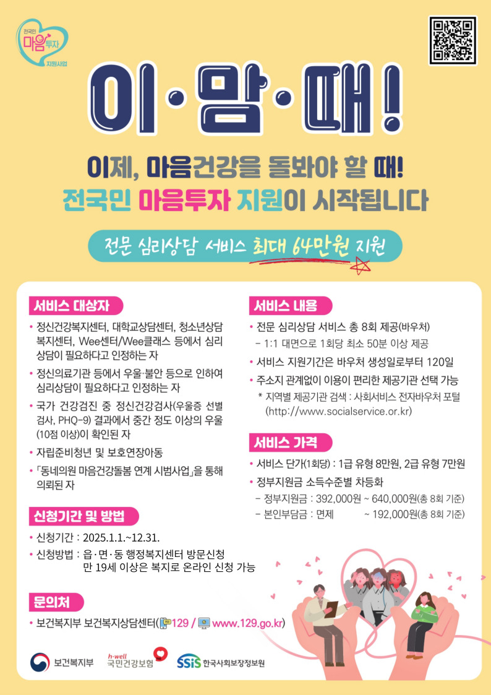

정신건강 심리상담 바우처
우울·불안 등 정서적 어려움으로 인해 심리상담이 필요한 국민에게 전문 심리상담 서비스 바우처를 제공하는 서비스입니다.
사업 목적
우울·불안 등 정서적 어려움이 있는 국민에게 심리상담 서비스를 제공하여, 국민의 마음건강 돌봄 및 정신질환 사전 예방·조기발견
서비스 대상 및 내용
서비스 대상
우울·불안 등 정서적 어려움이 있는 국민 중 아래 기준에 해당하는 자로, 나이 및 소득 기준은 없음
- 정신건강복지센터, 대학상담센터, 청소년상담복지센터 등에서 심리상담 필요성을 인정한 자 (의뢰서 3개월 이내)
- 정신건강의학과 의사 또는 한방신경정신과 한의사의 진단서·소견서 (3개월 이내)
- 국가건강검진 우울증 선별검사(PHQ-9) 결과 10점 이상 중등도 우울 확인된 자
- 자립준비청년·보호연장아동 (해당 확인서류 제출)
- 동네의원 마음건강돌봄 연계 시범사업 의뢰 대상
- 재난피해자 (피해사실확인서 등 제출)
- 정신건강복지센터 등록회원 (등록증명서 제출)
지원 내용
전문 심리상담 서비스 총 8회
1회당 최소 50분 이상, 1:1 대면 상담
바우처 단가
- 1급 유형: 8만원/회
- 2급 유형: 7만원/회
본인부담금 (기준 중위소득별)
| 기준 중위소득 | 본인부담률 |
|---|---|
| 70% 이하 | 0% (완전 무료) |
| 70% 초과 ~ 120% 이하 | 10% |
| 120% 초과 ~ 180% 이하 | 30% |
| 180% 초과 | 50% |
※ 자립준비청년·보호연장아동·법정한부모는 본인부담 면제

전국민 마음투자 지원사업
우울·불안 등 정서적 어려움으로 인해 심리상담이 필요한 국민에게 전문 심리상담 서비스를 지원하는 보건복지부 사업입니다. (2025년 사업 안내 기준)
사업 목적
우울·불안 등 정서적 어려움이 있는 국민에게 대화 기반의 전문 심리상담 서비스를 제공하여, 국민의 마음건강 돌봄, 자살 예방 및 정신질환 조기발견
서비스 대상 및 내용
서비스 대상
우울·불안 등 정서적 어려움이 있는 국민 중 아래 기준에 해당하는 자로, 나이 및 소득 기준은 없음
- 정신건강복지센터, 대학교상담센터, 청소년상담복지센터, Wee센터/Wee클래스 등에서 심리상담이 필요하다고 인정하는 자 (의뢰서 3개월 이내)
- 정신의료기관 등에서 우울·불안 등으로 심리상담이 필요하다고 인정하는 자 (정신건강의학과 의사·한방신경정신과 한의사 진단서·소견서, 3개월 이내)
- 국가건강검진 중 정신건강검사(PHQ-9) 결과 중간 정도 이상 우울(10점 이상) 확인된 자 (1년 이내 건강검진 결과통보서)
- 자립준비청년 및 보호연장아동 (보호종료확인서·시설재원증명서 등)
- 「동네의원 마음건강돌봄 연계 시범사업」을 통해 의뢰된 자
※ 약물·알코올중독, 중증 정신질환 등 정신과 진료가 우선 필요한 경우 및 유사 사업(청년 마음건강 지원사업 등) 중복 이용자는 지원 대상에서 제외됩니다.
지원 내용
전문 심리상담 서비스 총 8회
1회당 최소 50분 이상, 1:1 대면 상담 · 서비스 지원기간: 바우처 생성일로부터 120일
바우처 단가
- 1급 유형: 8만원/회
- 2급 유형: 7만원/회
본인부담금 (기준 중위소득별)
| 기준 중위소득 | 본인부담률 |
|---|---|
| 70% 이하 | 0% (완전 무료) |
| 70% 초과 ~ 120% 이하 | 10% |
| 120% 초과 ~ 180% 이하 | 20% |
| 180% 초과 | 30% |
※ 자립준비청년·보호연장아동·법정한부모가족은 본인부담 면제
※ 1년에 1회만 신청 가능하며, 신청 이후 서비스 유형(1급/2급) 변경은 바우처 결제 전까지만 가능합니다.
신청 방법 및 절차
바우처 승인 및 발급
신청 후 승인되면 바우처가 발급됩니다.
발급된 바우처로 전문 심리상담 기관을 이용하실 수 있습니다.
마음동네에서 상담 예약
바우처를 받으신 후, 마음동네심리상담센터로 연락하여 상담 예약을 진행하세요.
전화: 032-431-0088
또는 아래 온라인 신청 양식 이용
마음동네 상담 예약 신청
정신건강 심리상담 바우처 또는 전국민 마음투자 지원사업 바우처를 받으셨거나, 일반 상담을 원하시는 분은 전화 또는 네이버로 신청해주세요.
전화 상담: 032-431-0088
이메일: mudn2@naver.com